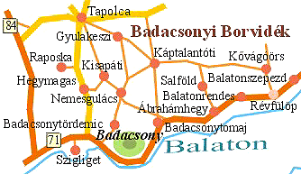

|
|
|
Weinbaugebiet
13 - Badacsony |
|
 |
Fläche:
1.647 Hektar - eine weltweit bekannte Weinbauregion um die
Basaltkuppen des Badacsonybergs herum. Hier werden ausschließlich
Weißweine produziert.
Weinbauorte: Ábrahámhegy, Badacsonyörs, Badacsonytomaj,
Badacsonytördemic, Balatonrendes, Balatonszepezd, Gyulakeszi,
Hegymagas, Káptalantóti, Kisapáti, Kővágóörs, Lesencetomaj, Nemesgulács, Raposka,
Révfülöp, Salföld, Szentgyörgyvár, Szigliget, Tapolca. |
Dieses Weinbaugebiet erstreckt sich
zwischen den Ortschaften Szigliget und Révfülöp und erfaßt das
darüber liegende Balaton Oberland. Das Bild oben
zeigt die wichtigsten Weinbauorte im Weinbaugebiet Badacsony. Für Touristen
gilt Badacsonytomaj aus gastronomischer Sicht als Zentrum des
Weinbaugebietes.
|
|
Das am Fuße der vulkanischen Berge
liegende Badacsony ist für seine Weingüter und besonders für den "Badacsonyi
Szürkebarát" (Badacsonyer Graumönch) bekannt. Hier werden vor allem
Weißwein erzeugende Weintrauben angepflanzt. |
 |
Die
Weine aus Badacsony sind massig, haben einen großen Extrakt-
und
Alkoholgehalt. Diese Weinbauregion ist bereits vor Jahrzehnten zu einer
anziehenden touristischen Attraktion geworden. Die Nähe zum
Plattensee
bzw. Balaton, zum Bala-Bala Badeort Siófok und zum
Thermalkurort
Bad Hévíz haben die Gegend für
Weinverköstigung geradezu prädestiniert.
Weinproben am Badacsonyberg sind ganzjährig in. Die meisten
der barock
bis klassizistischen Weinkeller stehen heute unter Denkmalschutz, viele
von Ihnen bieten unvergessliche musikalisch-folkloristische
Veranstaltungen an.
|
|
Weißweisorten in diesem Weinbaugebiet: |
- Welschriesling
- Riesling
- Chardonnay
- Ottonel Muskateller
- Ruländer (Graumönch)
- Blaustengel
- Riesling-Silvaner
- Traminer
- Grüner Veltiner
- Sauvignon Blanc
- Pinot Blanc
- Budaer Grün
- Rosenstein
|
|
Rotweisorten in diesem Weinbaugebiet: |
- Merlot
- Pinot Noir
- Cabernet Sauvignon
- Blaufränkisch
- Zweigelt
|
Weinbauer,
-wirtschaften und
-händler in diesem Weinbaugebiet:
- H-8256
Ábrahámhegy, Szent István
völgyi út 11
- H-8285
Kisapáti,
-
H-8265 Hegymagas, Szent
György-hegy
-
H-8258 Badacsonytomaj, Káptalantóti út 19 und H-8300 Tapolca,
Barackvirág u. 8
-
H-8257 Badacsonyörs, Füredi utca 24
-
H-8261 Badacsonytomaj, Római út 235
-
H-8283 Káptalantóti, Hegymőg dűlő
-
H-8261 Badacsonytomaj, Római út 197
(Széchenyi
Pince) - H-8393 Szentgyörgyvár, Kossuth Lajos utca 25
-
H-8283 Káptalantóti, Sabari szőlő 2
-
H-8265 Hegymagas, Szent György-hegy
-
H-8264 Szigliget, Antal hegy
-
H-8257 Badacsonyörs, Major utca 46
-
H-8257 Badacsonyörs, Füredi út 49
- H-8286
Gyulakeszi, Csobánchegy 24
kostenlose Anmeldung >>>
|
Die Ortschaft Badacsony und ihre Umgebung ist eine der
charakteristischsten Landschaften des Balaton-Oberlandes. Mit seiner
unvergleichbaren und unvergesslichen Schönheit ist es für Urlaub,
Baden und Weinproben hervorragend geeignet. Die Basaltberge Badacsony,
Gulács, Csobánc und St. Georg-Berg sind charakteristische Elemente
des Landschaftbildes, malerische geologische Erinnerungen,
zugleich
Lebensraum für sehr seltene Pflanzen- und Tierarten. Der 440 m hohe Badacsonyberg
wird seit 1956 amtlich geschützt und befindet sich seitdem im Nationalpark
"Balaton-Oberland". An seinen Hängen sind die hervorragenden
Weine gebenden Weintrauben der Badacsonyer Weinregion angepflanzt,
an seiner Seiten sind besondere geologische Bildungen, Basaltorgeln
zu finden. Den Badacsonyer Berggipfel kann man einfach, auf
Touristenwegen, nach der 379sten Stufe auf den "Treppen der
Flüchtenden" erreichen. Vom 438 m hohen Gipfel bietet sich ein wunderschönes Panoramabild
über die Gebirgslandschaft von Badacsony und zum
südlichen Balatonufer mit der Bucht von
Szigliget.
|
Die Umgebung von Badacsony bietet den Touristen viele Sehenswürdigkeiten. Die St.
Imre Kirche ist eine charakteristische Kirche der Siedlung.
Unterwegs zur Bergspitze haben viele Keltereien ihre Pforten
geöffnet, viele davon erwarten ihre Gäste bei Musik und bieten
folkloristische Unterhaltung an. Das Programmangebot im Sommer und
Herbst in Badacsony ist sehr reich. Ein herausragendes Ereignis in
Badacsony ist die am ersten Augustwochenende veranstaltete
Badacsonyer Kirmes und die Volkskünstliche Messe, natürlich mit
Weinlese oder Weinprobe zusammen.
|
Touristik:
und
die
|
| |
| |
|
Ungarn-Tourist Team

|
| |
| |
|